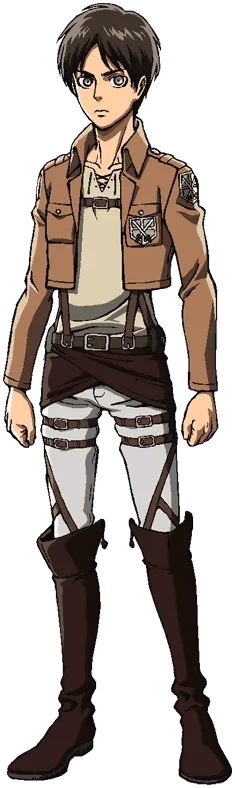
Joven impulsivo que sueña con la libertad y con acabar con los titanes. Su determinación lo lleva a convertirse en una figura clave del destino de la humanidad.
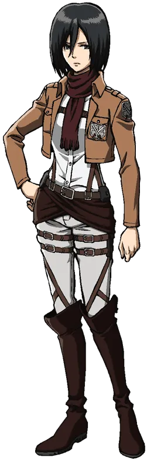
Soldado excepcional y extremadamente leal. Su fuerza y habilidad en combate la convierten en una de las guerreras más formidables del ejército.
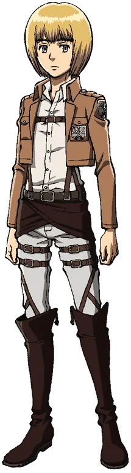
Estratega brillante con gran sensibilidad. Su inteligencia y capacidad para analizar situaciones cambian el rumbo de muchas batallas.
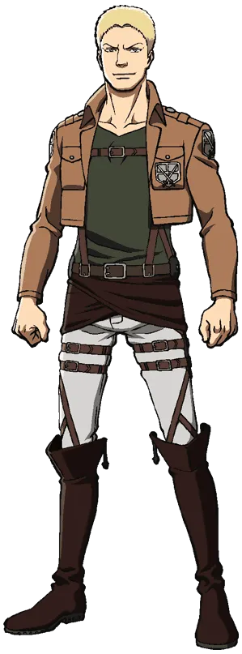
Guerrero fuerte y aparentemente confiable. Vive un conflicto interno entre su deber y los vínculos que forma con sus compañeros.
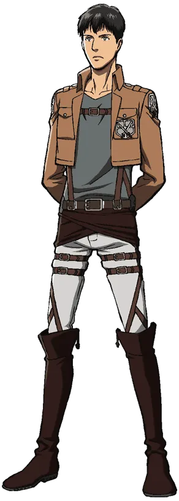
Reservado y silencioso, pero con un poder devastador. Su papel resulta crucial en uno de los mayores conflictos de la historia.
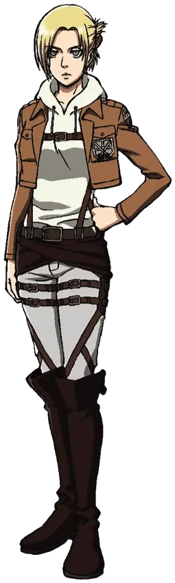
Combatiente fría y calculadora. Su habilidad en combate cuerpo a cuerpo y su carácter distante la hacen destacar entre los cadetes.
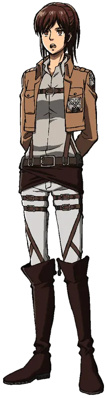
Conocida por su amor por la comida y su personalidad espontánea. A pesar de su actitud relajada, demuestra gran valentía en batalla.
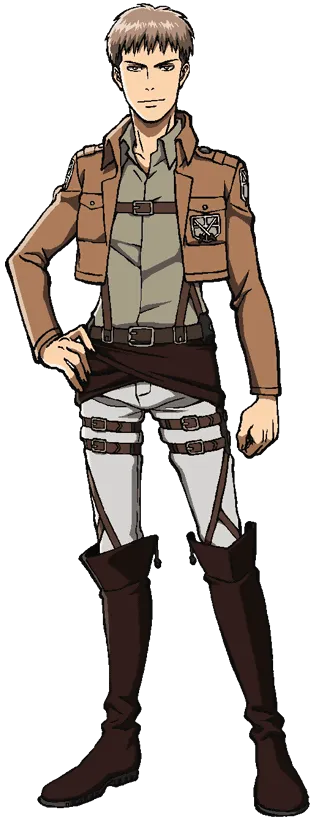
Pragmático y directo. Aunque al principio duda de su camino, con el tiempo se convierte en un líder responsable.
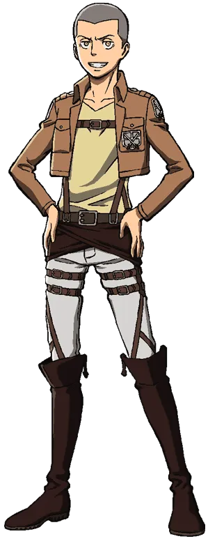
Amigable y leal con sus compañeros. Mantiene el humor incluso en los momentos más difíciles.
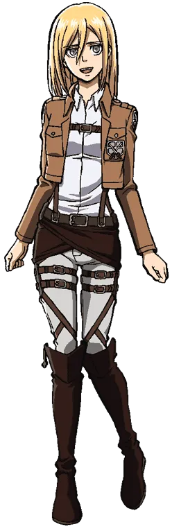
De carácter amable y decidido. Su verdadera identidad la coloca en el centro del futuro político de la humanidad.
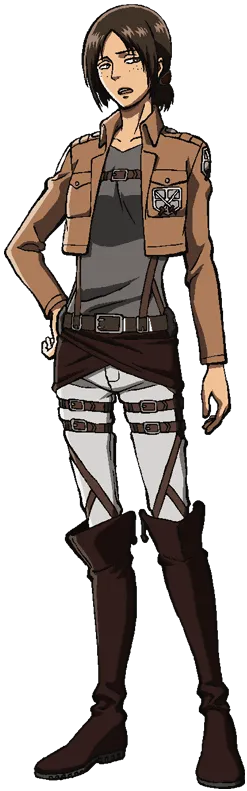
Independiente y sarcástica. Protege a quienes aprecia y carga con un pasado complejo.
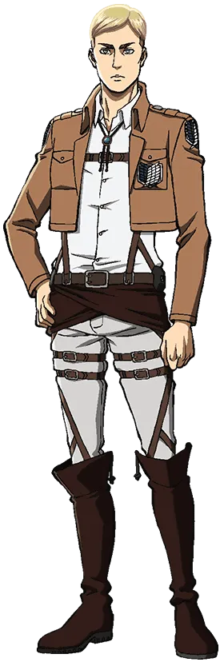
Comandante visionario y estratega brillante. Su liderazgo inspira a sus soldados a luchar incluso frente a lo imposible.
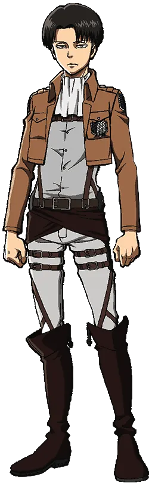
Capitán del Cuerpo de Exploración y el soldado más fuerte de la humanidad. Frío, preciso y extremadamente eficiente en combate.
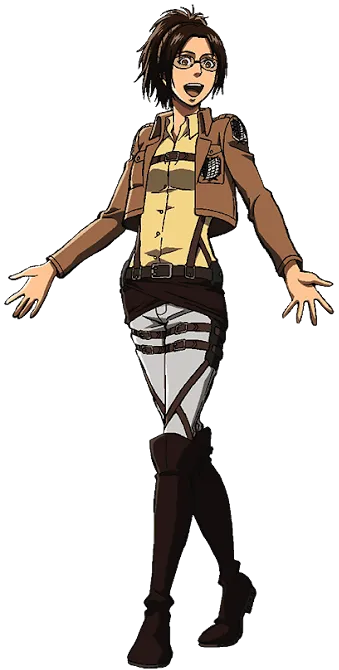
Científica apasionada por estudiar titanes. Su curiosidad y energía impulsan importantes descubrimientos.
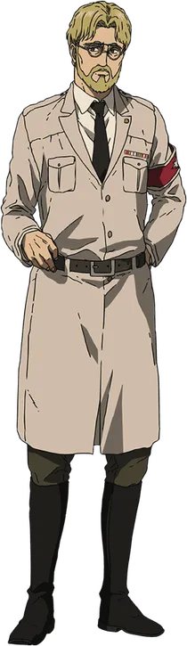
Estratega calculador y figura clave en los planes de Marley. Su visión del mundo lo lleva a tomar decisiones radicales.
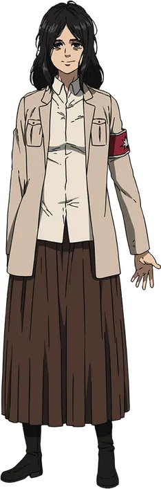
Guerrera inteligente y observadora. Destaca por su pensamiento estratégico y su capacidad para analizar el campo de batalla.
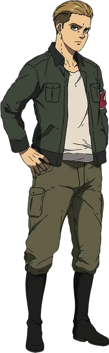
Guerrero orgulloso y temperamental. Su fuerte sentido del deber y su determinación lo impulsan a demostrar su valía.
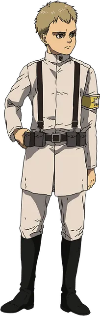
Joven guerrero con un fuerte sentido de empatía. Desea proteger a quienes ama incluso si eso implica sacrificarse.
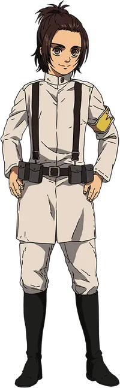
Cadete talentosa y extremadamente dedicada. Cree firmemente en su misión y lucha por demostrar su valor.
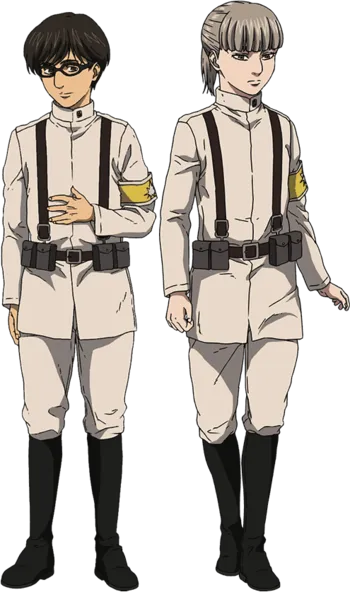
El es candidato a guerrero sensible y consciente del conflicto que los rodea. Su perspectiva muestra el peso de la guerra en los más jóvenes. Ella, candidata a guerrera de Marley. Observadora y tranquila, forma parte del grupo de jóvenes entrenados para heredar el poder titán.
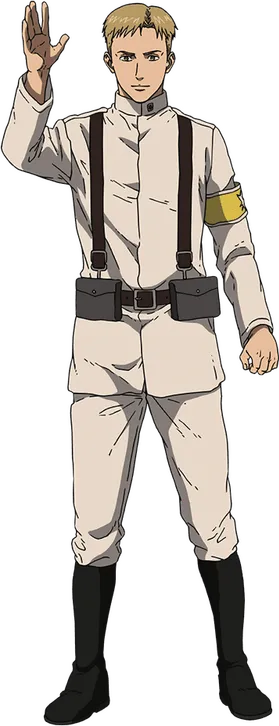
Candidato a guerrero de Marley y hermano mayor de Falco. Responsable y protector, se preocupa profundamente por la seguridad de su hermano y por cumplir con su deber.